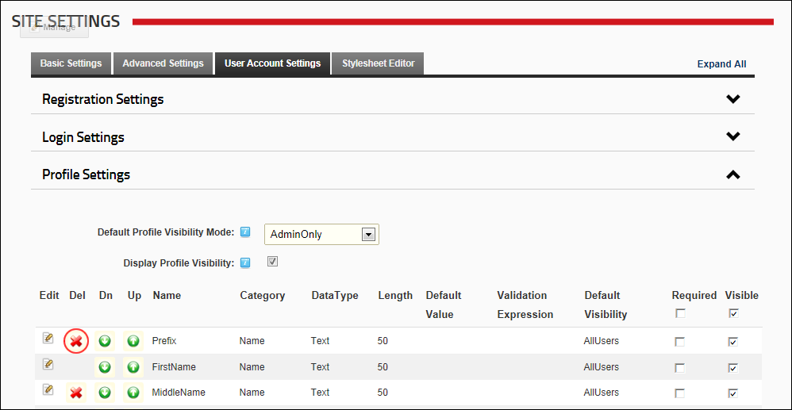

Deleting Profile Settings
How to permanently delete one or more profile fields using the Site Settings page.
- Navigate to Admin >
 Site Settings.
Site Settings.
- Select the User Account Settings tab.
- Expand the Profile Settings section.
- Optional. Click the Refresh Grid link located at the base of the module. This refreshes the grid with any recent updates.
- Click the Delete
 button beside a profile field. This displays the message "Are You Sure You Wish To Delete This Item?"
button beside a profile field. This displays the message "Are You Sure You Wish To Delete This Item?"
- Click the OK button to confirm.
